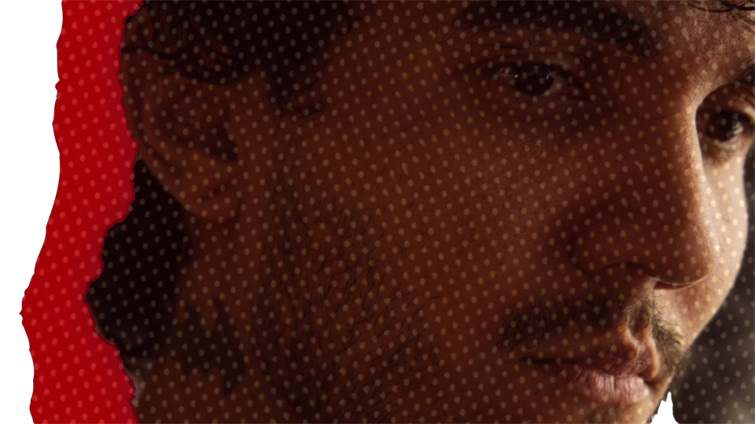
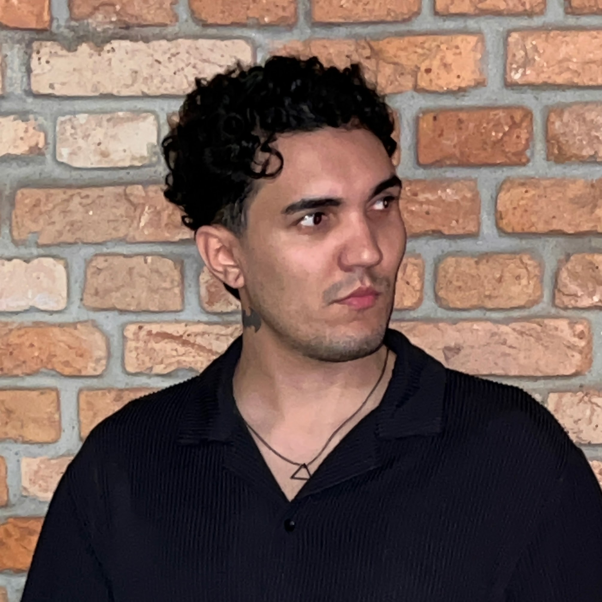

FELIPE SANTORINI
DIREÇÃO / FOTOGRAFIA / MONTAGEM
Histórias épicas com humor
e uma pitada de terror.
Portfólio


SOBRE MIM
Sou Felipe Santorini, videomaker e diretor, mas nem sempre foi asim. Em 2025, passei por uma transição de carreira saindo da área de TI para o Audiovisual.
Minha relação com a criação começou muito antes de eu segurar a primeira câmera. Começou nos traços das histórias em quadrinhos que eu desenhava na infância e nas primeiras produções musicais que gravava no computador. O que era uma brincadeira criativa se transformou em uma percepção aguçada para o que realmente importa: contar uma boa história.
ÁREAS DE ATUAÇÃO
- DIREÇÃO
- CINEMATOGRAFIA
- ROTEIRO
- MONTAGEM
- SOM E COR